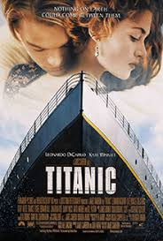

What movie should we watch?
A helpful guide for those who cannot agree on a movie
Instructions: You and your partner will choose one movie from each genre. In turn, we will produce a suitable movie option based on your choices.
Genres
If you like ROMANCE, choose between:
- b) 10 Things I Hate About You

If you like ACTION, choose between:
Results
a + a = The Giver
- Both The Hunger Games and The Giver are dystopian films and have a romance going on between the two main characters. A Walk to Remember features the same type of opposites attract love that's also shown in The Giver.
a + b = Titanic

- All three movies show a woman protagonist and a opposites attract type of love.
b + a = Avatar

- The concept of entering into a video game (i.e. Jumanji) or becoming a different species (i.e. Avatar) is one commonality. The love interest pairs in A Walk to Remember and the recommended film hold different world perspectives and influence each other for the better.
b + b = Miss Congeniality
- Humor is the common thread between all 3 films. Both 10 Things I Hate About You and the recommended film have socially defiant female protagonists. In addition, Jumanji and the recommended film involve characters breaking out of their day-to-day lives and assuming new identities.
ALRIGHT, YOU'RE ALL SET... START WATCHING!